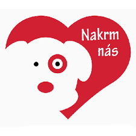
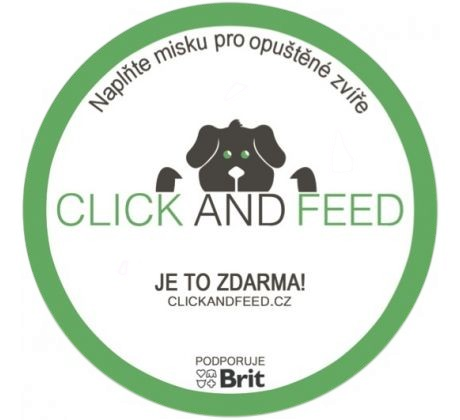
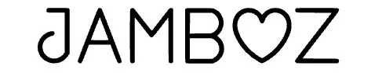

Jak se zapojit
Každá pomoc se počítá. Vyberte si způsob podpory, který je vám nejbližší, a staňte se součástí našeho příběhu.
Finanční podpora
Transparentní účet
Příspěvek můžete zaslat přímo na náš transparentní účet u Fio banky. Děkujeme za jakoukoliv částku.
CZ49 2010 2002 6400 0000 5872
SWIFT: FIOBCZPP
Darujme.cz
Bezpečný a rychlý způsob, jak přispět online platební kartou nebo bankovním převodem přes portál Darujme.cz.
Darovat online
Kryptoměny
Jdeme s dobou. Pokud dáváte přednost kryptoměnám, můžete podpořit náš spolek i touto formou.
Darovat krypto
Dlouhodobá podpora a nákupy
Virtuální adopce
Nemůžete si vzít zvířátko domů? Nevadí! Staňte se virtuálním rodičem jednoho z našich zvířecích obyvatel a přispívejte na jeho péči.
Adoptovat na dálku
Luční obchůdek
Udělejte radost sobě nebo svým blízkým nákupem v našem dobročinném obchůdku. Výtěžek putuje přímo na podporu zvířat.
Navštívit obchůdek
Partnerské projekty
Podpořit nás můžete i nákupem krmiva nebo jednoduchým kliknutím u našich partnerů.

Nakrm nás
Přes portál Nakrmnas.cz nám můžete koupit konkrétní krmivo, které naše zvířata potřebují. Balíček nám dorazí přímo do azylu.
Koupit krmivo

Click and Feed
Pomoc, která nic nestojí! Stačí jeden klik na webu Click and Feed a partneři projektu naplní misku v útulcích a azylech.
Kliknout pro pomoc

Farma Jamboz
Rodinná farma Jamboz z Čáslavi nám pravidelně věnuje vyřazenou zeleninu a ovoce, která putuje přímo do tlapek, zobáčků a zubů našich zvířátek. Jedete nás navštívit? Stavte se cestou u Jamboz a přivezte nějakou dobrotu – zvířátka vás za to odmění nadšeným přivítáním! 🐾
Navštívit Jamboz